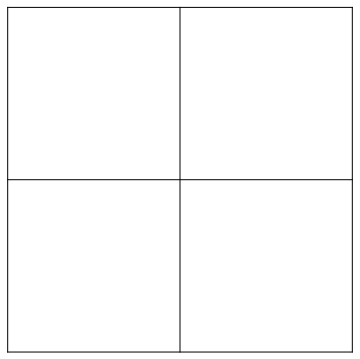
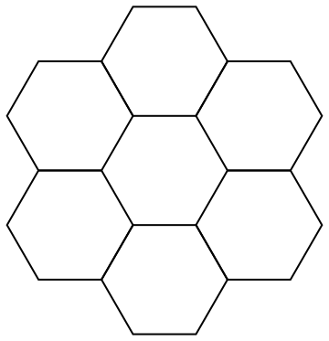
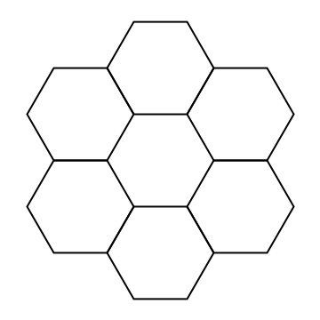
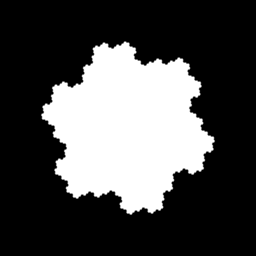

Spiral Architecture - part 1
In this post we will start to describe a framework for image processing with hexagonal pixels introduced by Sheridan1.
Cones and rods in the retina of mammals are distributed on an honeycomb lattice, which can be represented using hexagonal pixels. This representation yields many advantages in image processing. For example,
- Less pixels are needed to represent images with a given resolution (87% of the square ones required to discriminate at a given accuracy),
- Each pixel is at the same distance from its neighbors,
- Curves are more naturally represented, reducing the need of anti-aliasing procedures,
- While on a square grid only 4 rotations (those of multiples of 90 degrees) can be exactly represented, in an hexagonal grid 6 rotations are at our disposal.
This said, there are some problems to overcome in order to exploit these advantages:
- Conversion: Images are usually represented on square grids, so we need to convert them (possibly with a loss of resolution),
- Representation: While images on square grids are naturally represented as matrices, for hexagonal grids an appropriate indexing system and associated data structure have to be chosen.
Conversion: Pseudo-hexagonal pixels
Simple computations show that, for a given resolution, an hexagonal pixel has to be bigger than a square one with a ratio $\sqrt{3}/2 \sim 0,866$.
A quite efficient way of simulate this fact2 is to oversample this image by a factor of $7$. This can be achieved by splitting each square pixel in a grid of 7x7 elementary pixels with identical values. Then, an hexagonal pixel will be represented as an hyperpel, that is, a collection of 56 elementary pixels arranged in an almost-hexagonal way. The value of an hyperpel will then be obtained averaging the value of the composing elementary pixels. The fact that 56 elementary pixels form an hyperpel while 49 form a square pixel yield a good approximation of the correct ratio: $49/56\asymp 0,875$.
Various hyperpel have been devised, we will consider the following one:
o o x x x x x o o
o x x x x x x x o
o x x x x x x x o
x x x x x x x x x
x x x x x x x x x
o x x x x x x x o
o x x x x x x x o
o o x x x x x o o
This procedure has the advantage that, when it is required to visualize the image, there is no need to do any conversion. Moreover, the evaluation of the hyperpels values can be done only when needed, which reduces the preprocessing time. However, the space required to store the oversampled image increases by a factor of 49, effectively making too expensive the use of this method on high resolution images.
A simple Python function for the oversampling procedure is the following:
def oversampling(image, factor = 7):
"""
Returns the oversampled image
`image`: initial gray-scale image represented as a 2D array
`factor`: the oversampling factor
"""
old_shape = image.shape
new_shape = (factor*old_shape[0], factor*old_shape[1])
new_image = np.zeros(new_shape)
for i in range(old_shape[0]):
for j in range(old_shape[1]):
new_image[factor*i:factor*i+factor,factor*j:factor*j+factor] \
= image[i,j]*np.ones((factor,factor))
return new_imageRepresentation: Spiral Architecture
Now that we have described how to convert square pixels to hexagonal pixels, a way of referencing the latter is needed. Again, multiple propositions have been advanced during the years3, as for example
- Offset addressing
- Orthogonal addressing
- 3D addressing
- Hexagonal spiral honeycomb mosaic
The first three are essentially extensions or adaptations of what is done in the case of square pixels, and are thus very efficient in associating to each index the corresponding position on the image and vice-versa. The last one, on which we focus, is a completely different approach heavily oriented on optimizing the computations needed for the two natural geometrical operations on the honeycomb lattice: translation and rotation.
Construction of the spiral honeycomb mosaic
Usually square pixeled images are composed of $2^{2n}$ pixels. One could generate iteratively these square grids, starting from the fundamental element composed of 4 cells arranged in a square, as follows:
- If $n=1$ the construction is completed by identifying each cell with a pixel.
- If $n>1$, replacing each cell with another fundamental element (see the animation).
- Repeat the above procedure $n-1$ times, and then identify the cells with the pixels.

By enumerating the cells of the fundamental grid from $0$ to $3$ and assigning to each pixel the sequence of cells in which at each step it is contained, we can index the complete grid by means of a single coordinate $x$ expressed in base 4 and with exactly $n$ digits.
In the case of square pixels, this representation does not yield many advantages over the natural matrix indexing while complicating the intuition of a human programmer. On the other hand, we now show that the same procedure applied to hexagonal pixels, called spiral architecture, allows to encode the translation and rotation operations as simple operations on the spiral indexes of the pixels. Obviously this fact has many interesting applications in image processing.
To define a spiral honeycomb mosaic, we let the fundamental element to be composed of 7 hexagons: a center and the 6 adjacent ones.

We then proceed as above, iteratively, to augment the number of pixels until getting to the desired hexagonal grid of $7^n$ pixels as shown in this animation.

Some remarks:
- The fundamental element is not hexagonal, thus at each step we obtain slightly different boundaries. Moreover, in order to fit the previous grid, we are forced to slightly tilt the newly obtained grid constructing a sort of spiral.
- Pixels in a SHM are indexed by numbers in base $7$
- Spiral honeycomb mosaics are, by construction, roughly circular. Thus when representing an image as a SHM we usually disregard what happens at the corners. Look at the following example of the biggest SHM embeddable in a 256x256 image: 
Conclusion
In this post we explained how to simulate hexagonal pixels and how to build a spiral honeycomb mosaic to index them. In the next posts we will talk about
- How to recover the hyperpel associated with a spiral index.
- The operations of spiral addition and multiplication associated with the spiral honeycomb mosaic and their geometric significance.
- How to expoit these operations to implement fast algorithm for rotating images.
-
“Spiral architecture for machine vision”, PhD Thesis https://opus.lib.uts.edu.au/research/handle/2100/280 ↩
-
See for example “A New Simulation of Spiral Architecture”, by X. He, T. Hintz, Q. Wu, H. Wang and W. Jia. ↩
-
For a review see “Hexagonal structure for intelligent vision”, X. He and W. Jia, in Proc. 1st Int. Conf. Inf. Commun. Technol. ICICT 2005 (2005), pp. 52–64. ↩